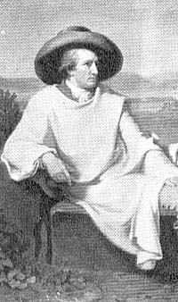

Johann Wolfgang von GOETHE (1749-1832)

Ýsa bütün saflýðýyla duyuyorKainatýn ilahý bir tek diyordu
Onu ilahlaþtýran her kiþi
En kutlu hislerini yaralýyordu
Ýslamiyet'e, Kur'an'a hayranlýðý ve yakýnlýðý ile tanýnan Goethe, 1749 yýlýnda Frankfurt'ta doðdu. Tanýnmýþ bir ailenin çocuðu idi. Annesi Catherina Elisabeth Textor, belediye baþkaný ve mahkeme reisinin kýzý; babasý, Johann Caspar Goethe ise, hukukçu olup Frankfurt þehir meclisinde Ýmparatorun müþaviri olarak görev yapýyordu.
Malikanenin büyük kütüphanesinde çalýþarak iyi hocalardan ders alan Goethe, iyi bir öðrenim gördü. Tarih, coðrafya, matematik, resim, tabii bilimler, teoloji ve müzik derslerinin yaný sýra, Ýngilizce Fransýzca, Ýtalyanca Latince ve Ýbranice gibi çok sayýda lisan derslerini de aldý. Bulunduðu çevre ve dönemin modasý haline gelen büyülü Þark imajý ve Binbir Gece Masallarý hakkýnda bilgi sahibi oldu.
Babasýnýn da teþvikiyle hukuk öðrenimini görmek maksadýyla gittiði Leipzig'den, rahatsýzlýðý nedeniyle üç yýl sonra geri döndü. Yarým kalan öðrenimini Strassburg Üniversitesi'nde tamamladý. Öðrenciliði sýrasýnda yaþadýðý en önemli geliþmelerin baþýnda, bulunduðu þehre meþhur yazar ve filozof olan Johann Gottfried Herder'in gelmesi ve onunla tanýþmasý gelir. Bu görüþmelerinde Herder, ýsrarla Kur'an-ý Kerim'i incelemesini ve daha önce yayýnlanan (1734) George Sale'nin yaptýðý tercümeyi okumasýný tavsiye eder.
Meslek hayatýna serbest avukat olarak baþladý. Yayýn hayatýyla da ilgilenen Goethe, ilmi yazýlara daha fazla aðýrlýk veren ve haftada iki defa yayýnlanan Frankfurter Gelehrten Anzeige isimli dergide makaleler yayýnladý. Gerek kendisinin gerekse bu dergide yazan diðer yazarlarýn Kilise aleyhindeki yazýlarýndan dolayý rahiplerle aralarýnda ciddi bir mücadelenin baþlamasýna sebep oldu. Kilise ve rahiplerle aralarýnda sürtüþmeler devam ederken, Kur'an-ý Kerim'in, rahip Friedrich David Megerlin tarafýndan yapýlan tercümesine sert eleþtiriler yönelten bir makale yayýnladý. Rahibin, Kur'an-ý Kerimi hakkýyla tercüme edemediðini, Kur'an'ýn, bu eserde yazýlanlardan çok daha yüce deðerleri ve fikirleri ihtiva ettiðini yazdý.
Wetzlar Devlet Ýstinaf Mahkemesinde staj yaptýðý sýrada tanýþtýðý ve arkadaþ olduðu Johann George Christian Kestner, Goethe'nin kiþiliði hakkýnda çok önemli bilgiler aktarmaktadýr. Onu; güçlü karakter, canlý bir tahayyül gücü, büyük bir deha ve asil bir düþünceye sahip birisi olarak tasvir eder. Hýristiyanlýk dinine saygý duyar ama, kiliseye gitmez ve günah çýkarmaz. Þaraba batýrýlmýþ mukaddes ekmekten de yemez. Gelecekte daha iyi bir hayatýn varlýðý inancýnda olup daima hakikat peþinde koþar. Goethe, Hýristiyanlýðý yaþamaz; ama asla dinsiz deðildir.
Weimar Dükü Karl August'un daveti üzerine 1775 yýlýnda Weimar'a gitti. Burada bir yýl sonra kurulan hükümete özel temsilci olarak tayin edildi (1776). Üç yýl sonra dükün teklifi üzerine imparator tarafýndan asalet unvaný verilerek özel danýþmanlýða (1779), daha sonra da maliye bakanlýðýna atandý (1782). Üstlendiði görevleri büyük bir baþarý ile yerine getirdi. Ülkesinin kalkýnmasýna katkýda bulundu.
Devlet iþlerinde yorulup ruhen de çok yýpranýnca, on altý yýl gibi çok uzun süren bir Ýtalya seyahatine çýktý (1786). Fransýz Ýhtilalinden sonra meydana gelen savaþlarda, Weimar Dükü Karl August'un yanýnda Fransýzlara karþý yapýlan savaþa katýldý. Bu savaþla ayný zamanda Fransýz Ýhtilalini yapanlarý yakýndan tanýma fýrsatýný elde etti. Almanya'nýn da müttefiki bulunduðu Rusya'nýn, Fransýzlarla yaptýðý savaþta Rus ordusunda bulunan Müslümanlarla yakýndan ilgilendi. Onlarý evine davet etti. Protestan lisesinin salonunda Müslümanlarýn topluca kýldýklarý namazýn, hem kendisi hem de orada bulunan Almanlarý çok etkilediði, bir arkadaþýna yazdýðý mektubundan anlaþýlmaktadýr. Kendisinin de bu namaza iþtirak ettiðini yazmaktadýr. Bu olaya þahit olan dindar hanýmlar kütüphaneden Kur'an istemeye baþlarlar.
Hýristiyanlýk dininden çok, yapýlmýþ bulunan tahrifatlara karþý cesaretle bir mücadele veren Goethe, ömrü boyunca hakikati arama sevdasýndan vazgeçmedi. Teslis akidesini reddedip Ýslam'ýn tevhid inancýna gönül baðladý. Ýsviçre'nin Harz daðlarýný dolaþýrken baþ baþa kaldýðý tabiatýn haþmetinin perde arkasýndaki Ýlahi Kudretin etkisinde kaldý ve kainatýn yaratýcýsýna olan sevgisi katlanarak iç dünyasýnda büyük deðiþiklikler meydana getirdi. Bu deðiþiklik þiirlerine de yansýdý. Özellikle bitki ve hayvanlarýn yaratýlýþý, bu yaratýlýþtaki üstün Ýlahi sanat onu bu alanda çalýþmaya sevk etti. Morfoloji, biyoloji ve paleontoloji ilimleri alanýnda önemli çalýþmalarda bulundu.
Peygamber Efendimizin (asm) isminin anýlmasýna dahi tahammülün olmadýðý bir zaman ve zeminde Goethe'in söyledikleri ve yazdýklarý dikkate þayandýr. Kur'an-ý Kerim'in bir rahip tarafýndan yapýlan tercümesine karþý Frankfurter Gelehrten Anzeige'de yayýmladýðý eleþtirisinde þu ifadelere yer verdi:
"Kur'an'ýn þümulünü kavramaya meyyal, çok keskin bir zekaya sahip, þair ruhlu bir Alman mütercimin, Þark'ýn mehtaplý berrak semasý altýnda ve ilahi vahyin geldiði yere kuracaðý çadýrda Kur'an'ý bir peygamberin ruh hali içerisinde okuduktan sonra tercümeye baþlamasý en büyük arzumdur".
Risale-i Nur, insanlarýn dikkatini kainata çevirip her þeyde Cenab-ý Hakkýn kudret ve azametinin delillerini ve tecellilerini gösterir. Her þeyde Yaratýcýnýn mührünün bulunduðunu, kainatý okuyabilen bir insanýn Cenabý Hakkýn varlýðýna ve birliðine ulaþacaðýný sayýsýz örneklerle gözler önüne serer. Ýþte o zaman Kainatý okumaya çalýþanlardan birisi de Goethe'dir. Kur'an-ý Kerim'in bazý surelerinin üzerinde yaptýðý çalýþmalardan sonra, düþünen insanlarýn Allah'ýn varlýðýnýn ve birliðinin delillerini, tabiattaki tecellilerinde müþahede edebilecekleri kanaatine vardý. Bu çalýþmalarýnda Hazreti Muhammed'in insanlýk için yüklendiði göreve dikkat çeken ayetlere özel ilgi gösterdi. Peygamber Efendimiz ile ilgili yaptýðý çalýþmalardan sonra bir tiyatro eserini ele aldýðý halde bunu tamamlayamadý. Peygamber Efendimizi tasvir ettiði þiirinde, Onu, kayalar arasýnda doðan bir nehre benzetir. Irmaklarý ve dereleri de bünyesinde toplayan bu büyük nehir okyanusa ulaþýr.
Yetmiþ yaþýna gelen Goethe, Kur'an'ýn semadan Peygambere indirilmiþ bulunan bu mübarek geceyi (Kadir gecesi) neden saygýyla kutlamayalým diye sorar. Kendisini dinsizlikle itham edenlere karþý, gerçek Hýristiyanlýða kendisinin inandýðýný, gerçek Hýristiyan'ýn kendisi olduðunu belirterek teslis inancýný reddeder.